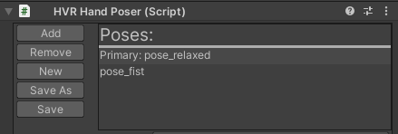
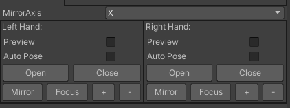

Hand Posing
The asset includes both dynamic and static posing. When setting up the HVRGrabbable component the default behaviour will be dynamic posing until static poses are assigned.
The following tutorial video will go through the process of setting up a grabbable object with a static pose.
Note
An object can have many grab points with poses assigned, the position and rotation are evaluated to chose the correct one.
HVRHandPoser Component
The HVRHandPoser is used to author poses, with the added capability of simple animation from the Primary pose to Secondary poses via button press, code driven animation params, or finger curls from capacitive buttons.
Poses contain the local position and rotation of each finger bone, and the local position and rotation of the object that it is a child of in a scriptable object.
Poses
The Poses list view contains the list of poses this hand poser can animate. Basic objects require only a single "Primary" pose (the first in the list.)
- Add / Remove: will add or remove secondary poses from the hand poser.
- New: Used to snapshot the current hand pose into a new pose file.
- Save As: Snapshots the current hand pose into the selected file.
- Save: Saves the active pose into the currently selected pose file.

Pose Preview
Toggling the Preview for each hand will spawn the hand prefab that is assigned in the HVRSettings: Pose Settings.
If Inverse Kinematics is toggled in HVRSettings: Pose Settings then the Full Body prefab will spawn instead of the hands. The IK target will be set as a child of grab point if that hand's Preview checkbox is toggled.
Enabling Auto Pose will use the dynamic poser which can be useful in rapidly generating poses.
Important
Sometimes the dynamic pose fails (Overlap Sphere in Edit Mode sometimes doesn't work!), if this happens to you try removing the RigidBody component from your grabbable object until done with dynamic posing.
Open / Close: Manually activate the dynamic poser on command.
Mirror: Will mirror this hand's pose over to the other hand.
Focus: Select's the hand preview game object in the scene Hierarchy.
"+ / -" : Expands or Collapses the hand preview's children objects in the scene Hierarchy

Selected Pose
All fields in the Selected Pose view apply to the pose that is selected in the main List View of poses.
The Pose field references the scriptable object that contains the finger and hand position and rotation values.

Finger Curls
Finger Settings on the HVRInputManager drives the Finger Curls values that come from capacitive buttons.
The HVRHandAnimator FingercurlSource field can be overwritten after game start if you wish to provide your own Finger Curl values.
To allow Finger Curls to affect your pose change the value from Static to Close. Fingers with Static assigned will not be affected by finger curls.
When Finger Curls are activated on an object's Primary Pose, the base pose becomes the hand's relaxed hand pose. A curl value of 0 would pose that finger at the hand's relaxed pose, where a value of 1 would animate the finger to the assigned pose. This allows your hand's to have some life when holding objects if desired.
The Finger Start fields will shift the starting point of the pose. In the example image below, the Thumb will start 75% of the way from the hand's relaxed pose to the object's defined pose when the Finger Curl value for that finger is 0, curl value of .5 would be 87.5% of the way, and a value of 1 would be 100% of the way to the assigned pose.
Tip
Hand Poser Finger Curl Defaults Default settings for new HVRHandPoser Finger Curls can be assigned in the HVRSettings.

Animation Parameters
The animation parameter section of the selected pose is used to animate the fingers while holding an object. This will drive the finger from the Primary Pose to this Pose.
- Weight: The weight of this pose as it applies to the assigned finger.
- Speed: Smooth Lerp speed, animation lerps from the current position / rotation to the target rotation at this rate * deltaTime.
- Mask: Used to define which finger this pose would affect. 'Nothing' will apply to all fingers.
- Type: Controls the pose target value that is interpolated to.
- Manual: Dev must pull the HVRHandPoseBlend from the HVRHandPoser list and assign the Value field between 0 and 1 manually.
- Immediate: The target pose takes affect immediately.
- Float Parameter: assign a code driven or button driven parameter from an analog button (grip trigger etc.)
- Bool Parameter: assign a code driven or button driven parameter from a binary button (a/x, joystick click etc.)
Animation Parameter / Button Parameter
Choose to drive the animation via code or from controller button presses. Button Parameter mode is really only useful for Oculus controllers since only one button can be chosen at a time. Or if you are using grip / trigger as all controllers have that. To handle all controllers or for more complex scenarios then make use of the Animation Parameter instead.
Button Parameter? must be toggled to use the button parameter, otherwise the Animation Parameter will be used.
To set and clear parameters in code use the below static function calls used by the HVRHandAnimator.
HVRAnimationParameters.ClearFloatParameter(HVRHandSide.Right, "ParameterNameHere");
HVRAnimationParameters.SetBoolParameter(HVRHandSide.Right, "ParameterNameHere", true);
HVRAnimationParameters.SetFloatParameter(HVRHandSide.Left, "ParameterNameHere", value);
HVRAnimationParameters.ClearFloatParameter(HVRHandSide.Left, "ParameterNameHere");
//Reset all parameters
HVRAnimationParameters.Reset();